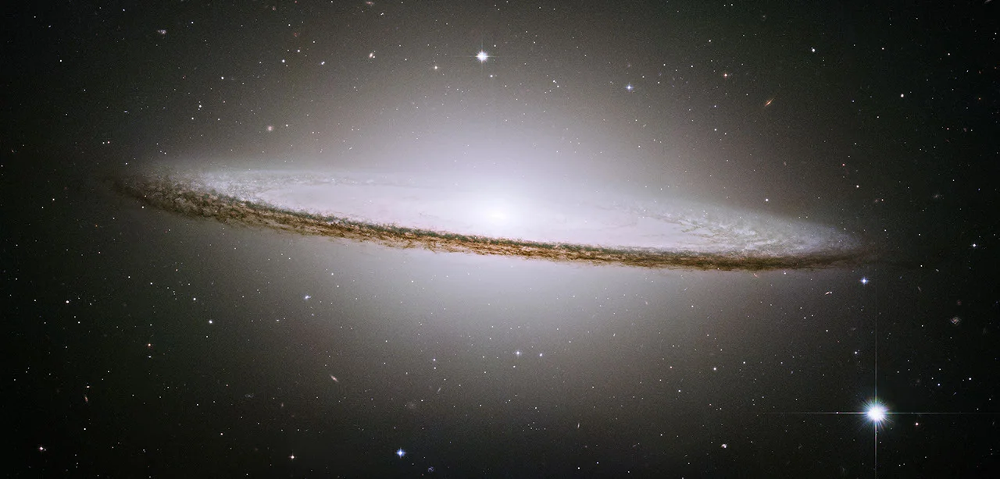

Sombrero Galaxy (M104)

Overview
The Sombrero Galaxy gets its name from its shape. Seen almost edge-on from Earth, its bright, bulging center and thick lane of dark dust make it look like a wide-brimmed Mexican hat. The galaxy is surrounded by a huge swarm of star clusters, and a supermassive black hole sits at its center. Because of its striking look, it is one of the most photographed galaxies in the sky.
Interesting Facts
- The Sombrero has about 2,000 globular star clusters, roughly ten times as many as the Milky Way.
- A supermassive black hole about 1 billion times the mass of the Sun sits at its center.
Quick Facts
- Type: Spiral galaxy
- Distance from Earth: About 28 million light-years
- Size: About 50,000 light-years across
- Discovery: Discovered by Pierre Méchain in 1781